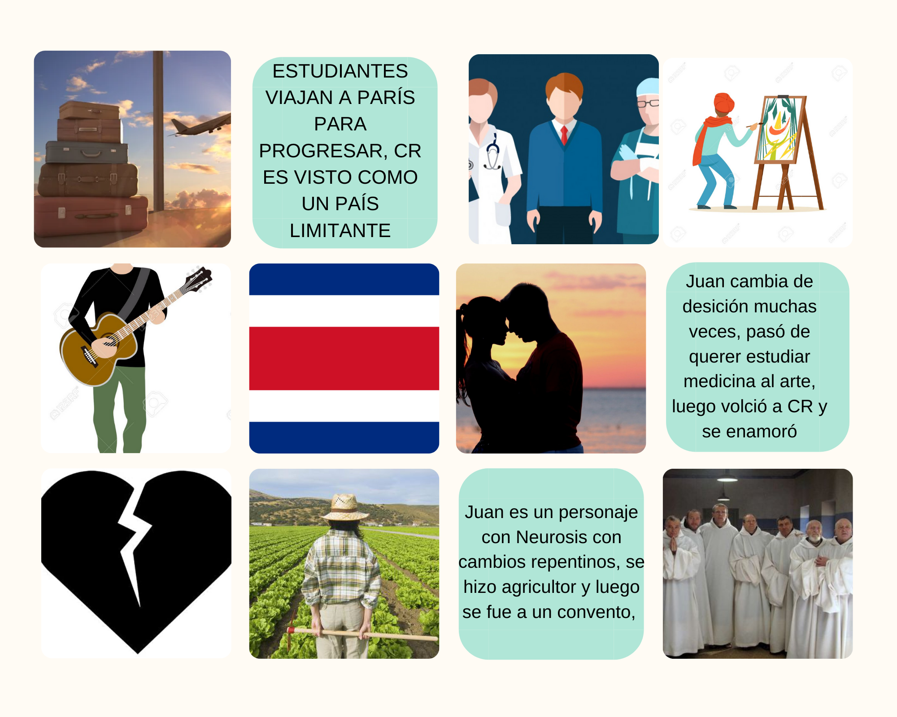

Neurosis
Análisis
Este cuento hace ver a Costa Rica como un encierro, un país en el que no se progresa. El autor hace ver a Costa Rica como si fuera sin gracia, lo entiende como el arca de Noe donde solo hay animales y a Europa como una civilización y cultura. Por lo que en este cuento se ve a París como superación y Costa Rica un país con limitantes que carece de oportunidades.
Hay dos personajes principales, Ramoncillo que es él narrador y un gran amigo de Juan el otro personaje principal. Ambos son estudiantes que vienen de una familia adinerada y viajan a París a estudiar medicina, Juan es talentoso, pero en el se puede ver una actitud muy indecisa durante la historia y se le señala de tener Neurosis.
Juan inicialmente viaja a París para poder estudiar medicina y su padre le pagaba la carrera, sin embargo luego decide estudiar arte, posteriormente decide inclinarse hacia la música, su padre al enterarse de que ya no está estudiando medicina decide dejar de pagarle los estudios y exigirle que regrese a Costa Rica.
Al volver a Costa Rica, Juan se enamora, pero al estar tan acostumbrado a la vida de parís o por ese mismo pensamiento de no saber lo que quiere, le da vuelta y la pierde para siempre. Luego de ello cae en una depresión y comienza trabajar en la finca cafetalera, se convierte en agricultor y deja de lado cualquier sueño relacionado con el arte, años después decide ir a encerrarse al convento.
Ramoncillo vuelve a Costa Rica como medico. Es aquí donde se compara la distintas vidas que tuvieron estos personajes y se justifica por el país, da a entender que Ramoncillo es exitoso y medico porque se quedó en París, mientras que Juan por haber vuelto se convierte en un hombre que dejó de lado cualquier meta de progreso o sueño y olvida todo lo que una vez quizó para quedarse trabajando como agricultor. La persona que viaja a Europa se valoriza, y aumenta su nivel de educación y sociedad ,mientra que en Costa Rica sucede todo lo contrario. El cuento menciona una vez las comidas nacionales, no menciona costumbres, ni tradiciones, tampoco a los mestizos o indigenas de Costa Rica, solo habla de personas blancas y caracteristicas ventajosas de lo extranjero, hay exclusión de lo que caracteriza a la nación costarricense.
Aún en la actualidad se ve a personas que quedaron con esa idea de que solo es posible superarse si se viaja a otro país, aún existe un poco esa exclusión hacia los indigenas y la negación a aceptar que somo mestizos y no blancos.
